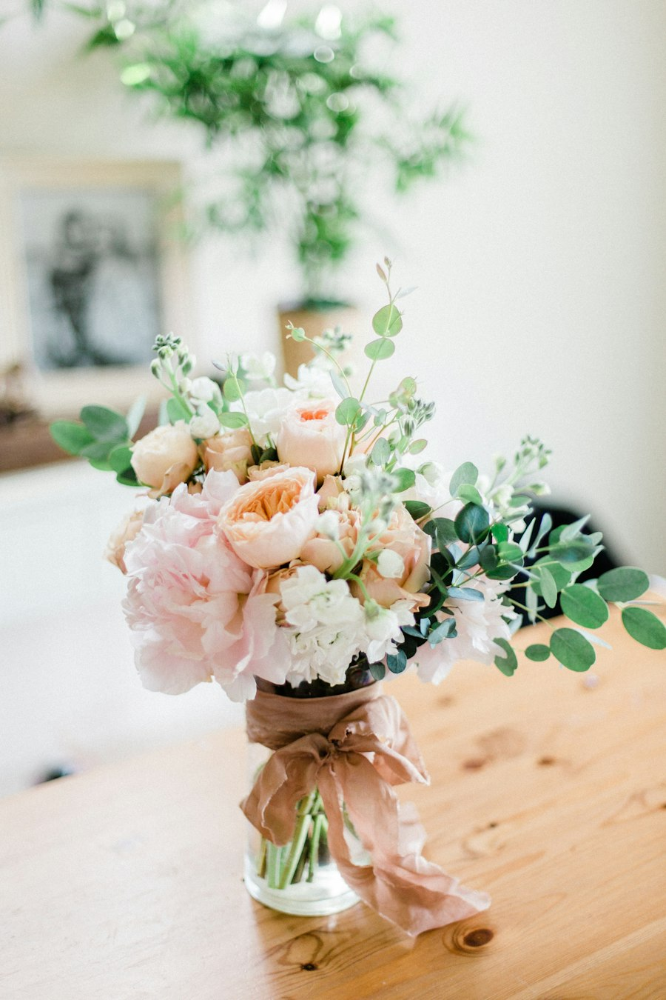
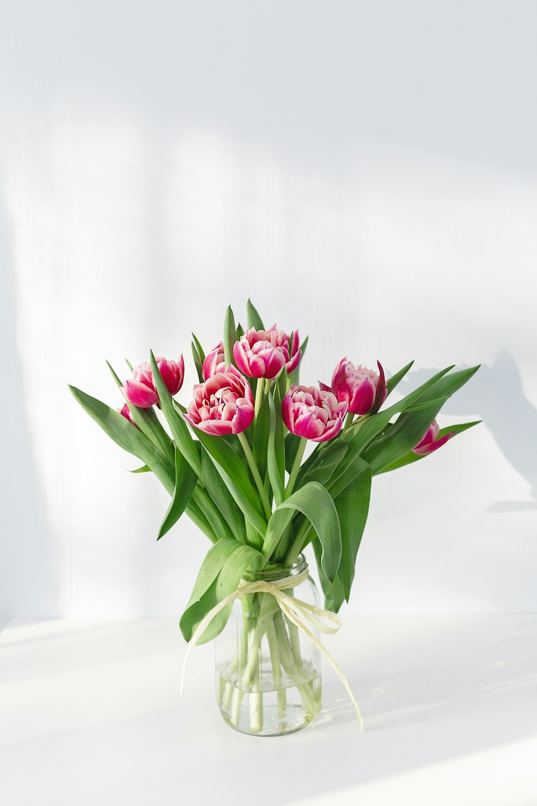

Bodas
Ramos de novia y ornamentación de ceremonia. Una clienta nos agradecía que captáramos lo que quería con muy pocas palabras.
Plaza de San Francisco · Linares
Desde comienzos de los años 70 acompañamos a las familias de Linares en sus días más felices y en los más difíciles.

Nuestra historia
Floristería Jurado es una firma linarense, en la Plaza de San Francisco, dedicada desde comienzos de los años 70 al mundo de la ornamentación floral.
Entre nuestros clientes somos conocidos como «históricos en nuestra ciudad», y es lo que más nos enorgullece: llevar décadas estando en los momentos importantes de las familias de aquí.
Ramos, centros, bodas, condolencias y decoración para el hogar: cada encargo se prepara con la misma atención, sea grande o pequeño.
Ver lo que hacemosQué hacemos
Ramos de novia y ornamentación de ceremonia. Una clienta nos agradecía que captáramos lo que quería con muy pocas palabras.
Ramos, centros y arreglos de flor natural y artificial para regalar, celebrar o simplemente alegrar la casa.
Coronas, centros y ramos para despedir con respeto a quien se ha ido. Atención cercana y sin esperas.
Más información →Muebles auxiliares, marcos, jarrones, cuadros y complementos para dar un toque de flor a cada rincón.
Y en cada temporada, lo que toca: San Valentín, el Día de la Madre, Todos los Santos… consúltanos.
Galería
Imágenes de ejemplo para esta propuesta. En la web definitiva irían vuestras propias fotos de bodas, ramos y centros.



Condolencias
Sabemos que en estas horas lo último que se necesita son complicaciones. Por eso puede llamarnos directamente y le atenderemos con calma, respeto y discreción.
Preparamos coronas, centros y ramos para despedir a quien ya no está. Nos indica el lugar y lo que desea transmitir, y nos ocupamos del resto.
Lo que dicen nuestros clientes
«Muy buen trato al cliente y amabilidad, profesionalidad.»
Reseña en Google
«Centros, ramos y de todo preciosos, volveremos seguro.»
Reseña en Google
Encargos
Puede llamarnos, venir a la tienda o dejarnos aquí su encargo y le responderemos lo antes posible.
Visítanos
Consúltanos por teléfono.